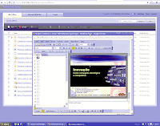

Web Office SaaS - A Plataforma alternativa de Escritório Electrónico em molde colaborativo
Publicado em 2009-07-07 09:22:00
{kind=link}
As ferramentas colaborativas são um passo importante para dinamizar processos inovativos nas empresas e organizações em geral e prometem enormes benefícios como o aumento da produtividade, redução de custos e, em última instância, o melhor alavancar do conhecimento entre
grupos internos e externos (conhecimento organizacional), e o desenvolvimento de produtos e serviços mais eficientes e rentáveis e contribuindo para uma melhor satisfação dos clientes.
Também nas actividades de escritório electrónico, e até pelas suas características de trabalho com carácter repetitivo, com muitas informações que poderão ser partilhadas e desde logo fácilmente reutilizáveis de tarefa para tarefa, ao dotar-se aquele de ferramentas colaborativas, estará desde logo a criar-se um ambiente mais produtivo e eficiente que promete romper com todas as fronteiras do trabalho isolado e meramente repetitivo.
Estão disponíveis no mercado inúmeras ferramentas e plataformas de colaboração de escritório de nível empresarial, vulgo "suites" de Office, mas
uma empresa tem-se destacado pela inovação, flexibilidade e eficácia das soluções que propõe.
Sem dúvida que a ThinkFree ® é a líder da próxima geração de soluções para ferramentas de produtividade e colaboração no escritório, constituindo uma plataforma independente, em qualquer lugar e a qualquer hora, sobre qualquer dispositivo. Em suma a ultima palavra em colaboração de documentos Office traduzindo uma completa integração e mobilidade na Empresa.
A usabilidade da Plataforma de Office da ThinkFree estende-se muito para além PCs e é perfeito para os acessos através da Internet, para dispositivos conectados, incluindo thin-clients e plataformas de computação móveis, como os telemóveis, PDA´s, NetBooks e outros.
A Plataforma de Office da ThinkFree tem sido frequentemente distinguida também como a solução mais compatível com a "suite" de Office da Microsoft ®, sendo composta composta de processamento de Texto, Folha de Cálculo e Apresentação gráfica de software capaz de ser utilizada off-line e on-line.
O Office da ThinkFree pode-se instalar e actualizar automaticamente através da Web ou de servidor Intranet da Empresa, com funcionalidades como a partilha de arquivos com base na Internet/intranet e a gestão integrada do seu armazenamento, bem como é dotado de completa segurança "end-to-end". Baseado em Java e construído de base com funcionalidades "cross-platform", o Office da ThinkFree é compatível com Windows, Macintosh, Unix e Linux.
De acordo com os utilizadores do ThinkFree Live este é o melhor software de Office online disponível para editar, criar e partilhar documentos no formato do Microsoft Office (Word, Excel, PowerPoint), de forma aberta e com completo acesso aos API´s, para integração com outras aplicações de escritório e de nível empresarial, como Wikis, ERP´s, CRM´s, etc.
Esta Suite de Office constitui uma plataforma livre de processamento de texto, folha de cálculo e apresentações, aplicações estas que são integradas com 1GB de armazenamento, ferramentas colaboração, publicação de blogs, páginas da web ou partilha de documentos (biblioteca de documentos publicados pelos servidores da ThinkFree), e capacidades de criação de PDF´s.
* ThinkFree Docs LIVE - Possibilita a pesquisa, a partilha e publicação de documentos com a comunidade mundial. O ThinkFree Docs é uma comunidade online de editores que partilham uma variedade de documentos, folhas de cálculo e apresentações. Poderá utilizar o ThinkFree Docs também através da Internet, juntamente com a sua conta online, e na qual poderá armazenar até 1 Gb.
* ThinkFree Server Edition - Está vocacionado para as Empresas que exigem ferramentas de escritório incorporando qualidade, produtividade, flexibilidade e segurança e simultâneamente frustrados com o elevado custo das soluções de mercado alternativas, como é o caso das licenças da MicroSoft, aliadas a elevadíssimas opções de manutenção de software. A ThinkFree desenvolveu a Plataforma ThinkFree Server Edition para satisfazer as necessidades das Organizações e Empresas. A edição do ThinkFree Server oferece um muito maior ROI, incorpora segurança adicional e gera uma utilização mais eficiente dos recursos tecnologicos internamente nas Organizações.
A qualquer hora, em qualquer lugar, os utilizadores podem criar e editar documentos que são perfeitamente compatíveis com o Microsoft Office. O ThinkFree Server Edition é lançado a partir de um servidor localizado na Intranet segura da Empresa, para ser executado dentro de um navegador da Web em um qualquer computador, Thin-Client ou outro dispositivo electrónico, com uma total liberdade de sistema operativo Linux, Windows ou Mac. A suite de Office é constituída pelos programas ThinkFree Write; ThinkFree Calc e ThinkFree Show.
Para uma demonstração da edição ThinkFree Server click [aqui].
Para além das plataformas de computação de desktops Linux, Windows e Mac, o ThinkFree Office está também disponível para NetBooks e para a plataforma Android (Telemóveis com O/S Android da Google tipo o G1). Mais info aqui. Para estas plataformas estão incorporadas ferramentas de sincronização automática de documentos locais com a infra-estrutura de servidores centrais ThinkFree da Empresa ou directamente com a conta de utilizador do site Web ThinkFree LIVE (que disponibiliza 1 Gb de armazenamento).
By: Francisco Gonçalves ( Francis.Goncalves@gmail.com )
IT Architect & Open-Source Advisor (2009).
Links adicionais: